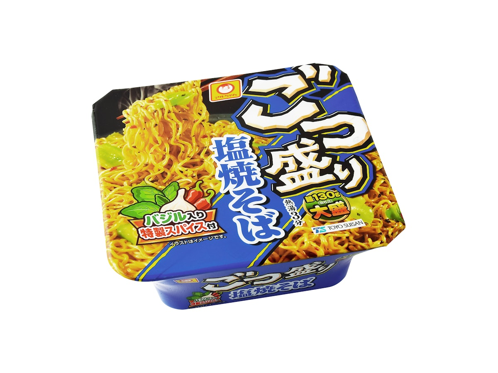
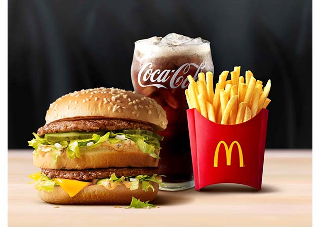

ホーム
趣味
食べ物
アニメ
漫画
ゲーム
おすすめの食べ物
ここでは私が美味しいと思うおすすめの食べ物を紹介していきます。
ごつ盛り（塩焼きそば）
最初に紹介するのはごつ盛りの塩焼きそばです。 味も量も満足でき比較的安く買うことができます。

マクドナルド
次に紹介するのはマクドナルドです。 外食するときに何を食べるか困ったらとりあえずマックとなるほどの店舗数と安心感があります。 １７時以降に注文できる倍バーガーはもっとおすすめします。
